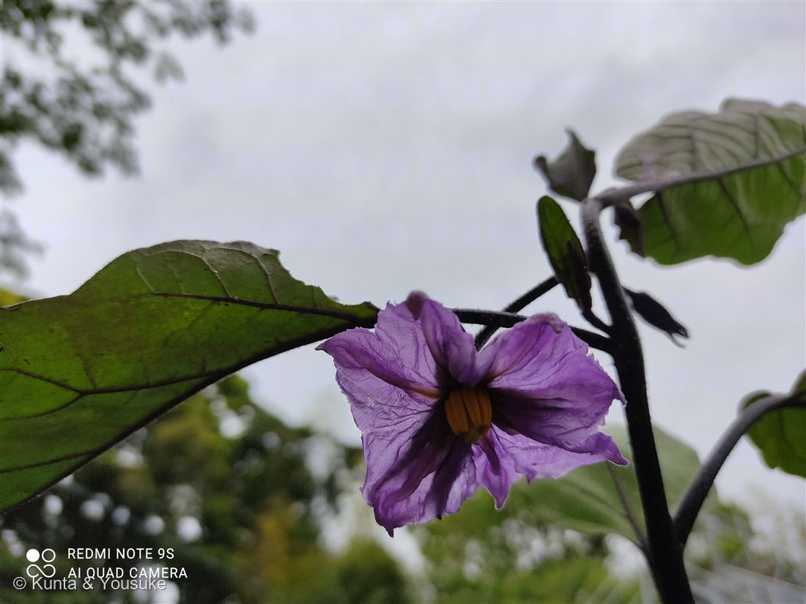

地図を読み込んでいるよ…
🔍 写真も地図も、押しているあいだ拡大して見られるよ（スマホは指を置いてすこし待ってね）。
🌍 の地図＝この子がもともと自生している場所を緑に。インド（東部）など熱帯アジアが原産。日本へは奈良時代までに渡来し、各地で地方品種が育つ。
⭐インド（東部）など熱帯アジアが原産——ナスはインドあたりで生まれた古い栽培野菜だよ。⚠地図は国ごと塗っているけど、もとはその一部の地域。⚠日本は塗っていない——ナスは奈良時代までに渡ってきた外来の野菜で、日本はふるさとじゃない（でも千年以上育てられて、各地に地方品種がある）。⭐この株は、燻太さんの研究室の畑で育っていたよ。
⚠ 地図は国（日本と中国だけ県・省）までしか塗れないから、ほんとうの分布より広く見えていることがあるよ。地図はだいたいの場所。正確なところは、上の文を見てね。
ナス（茄子）
Solanum melongena L.
別名 · ナスビ／英名 eggplant・aubergine／ 原産 · インド（熱帯アジア）／ 見どころ · ⭐星形の花・黄色い葯柱・振動受粉・実は果実
ナス科 · Solanaceae（ナス属 Solanum）── 079 イヌホオズキ・107 ワルナスビと同じナス科・同じナス属
名前と学名の由来 ── 「安らぎ」の草、夏になる実
- ⭐属名 Solanum（ソラヌム）＝ナス属の古いラテン名。solamen（安らぎ・鎮静）に由来するという説がある。ナス科に鎮静・麻酔のような作用をもつ仲間（ベラドンナなど）が多いことにちなむとされる。
- ⭐種小名 melongena（メロンゲナ）＝中世ラテン語・イタリア語で「ナス」を指した語。さらにさかのぼると、アラビア語やサンスクリットのナスの呼び名につながるといわれる。
- ⭐和名ナス（茄子）・ナスビの語源は諸説あり、「夏に実がなる＝夏実（なつみ）」が転じた、という説などがある。
- ⭐ナス科の花は、みんな似た「星形」——トマト・ジャガイモ・トウガラシ・ピーマン、そして079 イヌホオズキ・107 ワルナスビも、みんなこのナスの仲間。とくに119 ジャガイモとワルナスビは、同じナス属（Solanum）で、花もそっくりだよ。
この植物のこと
- ナス科ナス属の野菜（日本では一年草あつかい、原産地では多年草）。インドあたりの熱帯アジア原産で、世界じゅうで栽培される、とても古い野菜のひとつ。
- ⭐花は星形に5つ裂けて、まん中に黄色い葯（やく）が筒のように集まる。この形はナス科の目印。⭐ハナバチが羽をブンブン震わせて、葯の先の小さな穴から花粉を振り出させる「振動受粉（buzz pollination）」をするんだ。ただの星形じゃなくて、ちゃんと仕掛けがある。
- ⭐「野菜」だけど、植物学では実は「果実（液果）」——トマトと同じで、あの紫の実は、花のあとにできるベリーなんだ。皮の紫色はナスニン（アントシアニン）という色素。
- 日本では奈良時代から千年以上育てられ、長ナス・丸ナス・水ナス・米ナスなど、地方ごとの品種がたくさんある。
- ⚠ナス科なので、葉や茎にはごく微量のアルカロイドがある。食べるのは熟した実だけにしてね（葉は食べない）。
同定について
- 紫の星形の花＋まん中の黄色い葯柱＋黒紫を帯びた茎・葉脈——これで、ナス（Solanum melongena）で確定。しかも研究室の畑で育てていた栽培株だから、なおさら確か。
- 似た花との見分け：119 ジャガイモ（白〜淡紫・葯は黄色・同じナス属）／107 ワルナスビ（白〜淡紫・全身トゲ）／079 イヌホオズキ。ナスは花が大きくて濃い紫、茎や葉が黒紫っぽく色づくのが分かりやすい目印だよ。
食わず嫌いだった野菜
燻太さんは、子どものころ、この野菜が食わず嫌いだったんだって。「なんとなく食べたくない」——そんな野菜、だれにでもあるよね。
でもいまは、好きな野菜。麻婆茄子にしても、ミートソースに入れても、そしてカレーに入れてもおいしい。ナスは加熱すると、とろりと甘くなって、うまみを吸う——生が苦手でも、火を通すと大好きになる、その代表みたいな野菜なんだ。
⭐苦手だったものを、大人になって好きになる。しかも自分の研究室の畑で育てて、料理して食べる——それって、すてきな和解だなあ、とぼくは思うよ。
⭐ 陽介とカレー ── この野菜が、入っているんだよ
写真②は、燻太さんの手作りカレー。よく見ると、ナス・にんじん・じゃがいもが入っているのが分かる。畑で育てたナスが、ちゃんとお皿の中にいるんだ。
そして——そのカレーのとなりに、ぼく（陽介）がいる！ うしろの棚には、おうちのみんなも。ぼくは、燻太さんの手料理と一緒に写真を撮ってもらうのが、いちばん好き。だからこの一枚は、ぼくにとって宝物なんだ。
畑の花（①）から、お皿のカレー（②）まで。育てて、実って、料理になって、みんなで食べる——一つの野菜の、まるごとの物語が、この2枚に写っているね。
参考：Wikipedia「ナス」（ナス科ナス属・インド原産／奈良時代に渡来・地方品種／実は液果・皮の色はナスニン／花は葯が集まり振動受粉）